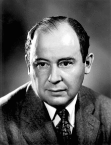

John von Neumann
Suponhamos que queiramos ordenar as peças de um dominó de acordo com a soma total de pontos em cada peça. Como fazê-lo? Uma solução simples seria colocar as peças em uma fileira e ir comparando peça por peça — se a peça atual tiver um valor maior que a seguinte, trocamos ambas de posição. Repetindo esse procedimento várias vezes até que nenhuma peça precise ter sua posição trocada, chegaremos a uma fileira ordenada.
Quem tem familiaridade com computação conhece este algoritmo como bubble sort ou, em bom Português, ordenamento por bolha. Apesar de ser uma maneira intuitiva de ordenar as peças, pode ser bastante demorada de ordená-las! Na pior das hipóteses, ou seja, quando as peças estiverem inicialmente em ordem decrescente, podemos gastar até 406 comparações até ordenar o dominó.
Em 1945, o matemático John Von Neumann propôs um outro modo de ordenar as peças, conhecido como merge sort. Enquanto nosso simples bubble sort usa até 406 comparações, Von Neumann propôs um jeito de ordenar que, na pior das hipóteses, usaria apenas cerca de 280 comparações, um número consideravelmente menor!
Para uma grande quantidade de peças, pode-se pensar que essa comparação é como um triciclo seguindo um carro de corrida — de fato, é com esta comparação que Israel Halperin, orientando acadêmico de Von Neumann assim o descrevia: "Keeping up with him was ... impossible. The feeling was you were on a tricycle chasing a racing car". Tradução livre: "acompanhá-lo era... impossível. A sensação que se tinha era que você estava em um triciclo perseguindo um carro de corrida".
Tal comparação não é exagero: além de ser uma figura patrística na computação, Von Neumann também foi conhecido como um ilustre matemático, tendo contribuições seminais em áreas bem distintas, como a formulação matemática da Mecânica Quântica e da Programação Linear.
Apesar do clichê e da preconceituosa correlação entre genialidade e loucura, suas habilidades cognitivas não estavam distantes de suas excentricidades — quando tinha apenas 6 anos, von Neumann perguntou a sua mãe: "O que você está calculando?", ao vê-la pensativa e olhando sem rumo.
Aliás, aparentemente, Von Neumann gostava de ambientes barulhentos para ativar sua criatividade, e chegou a dar uma bronca em sua esposa por ela ter preparado uma sala de estudos silenciosa demais para ele poder realizar a sua produção científica. Na Universidade de Princeton, onde trabalhou durante muitos anos, recebia reclamações por tocar marchas militares alemãs em um volume extremamente alto em seu fonógrafo, distraindo seus colegas de sala.
Foi na Universidade de Princeton, em 1946, onde Von Neumann fundou um programa para avançar a meteorologia — mais especificamente, pretendia usar a computação para o estudo numérico do clima. Nesta época, o ENIAC (criado por John Mauchly e John Eckert), o primeiro computador digital programável, eletrônico e de uso geral havia acabado de ser inaugurado (1945). Com milhares de tubos de vácuo, diodos de cristal, relés e pesando por volta de 27 toneladas, o ENIAC fez os primeiros cálculos numéricos do clima graças a Von Neumann e seu assistente neste projeto, Jule Gregory Charney, um dos pais da metereologia moderna.
A interação entre Von Neumann e o ENIAC não se resumiu apenas a este projeto: durante a guerra fria, Von Neumann temeu o avanço soviético e foi um grande apoiador do desenvolvimento de bombas nucleares para alcançar a paz de uma maneira aparentemente não tão pacífica: supondo que ambos países tivessem tais armas tão poderosas, nenhum dos lados teria qualquer incentivo para iniciar um conflito — em termos de teoria de jogos, se chegaria a um equilíbrio de Nash, situação na qual nenhum dos jogadores tem nada a ganhar se tomar alguma decisão de forma unilateral. Para se alcançar este equilíbrio, Von Neumann programou o ENIAC para fazer cálculos relacionados a viabilidade da bomba de hidrogênio.
Esta também não foi a primeira vez que Von Neumann trabalhou com física nuclear: durante a Segunda Guerra Mundial, von Neumann trabalhou no Projeto Manhattan com físicos teóricos como Edward Teller e o matemático Stanislaw Ulam, figura seminal na criação do método de Monte Carlo, um método probabilístico para se fazer cálculos, e que Von Neumann rapidamente implementou no ENIAC.
Uma de suas propostas mais próximas do nosso cotidiano ainda hoje é a arquitetura de von Neumann, proposta em 1945 e presente nos computadores atuais. A proposta de von Neumann consiste na utilização de um dispositivo de entrada (hoje são nossos teclados e mouses) que servem como interface para indicar os comandos a serem executados, que são carregados para a memória principal (hoje chamada de memória RAM) e, então, são acessadas pelo processador. Em outras palavras, foi aqui que surgiu o conceito de programas armazenados. Para informações mais detalhadas, disponibilizamos um link em nosso site.
Algumas curiosidades extras:
- Von Neumann nasceu em 28 de dezembro de 1903 em Budapeste, filho de pais judeus e era o mais velho de 3 irmãos;
- Aos 6 anos de idades, trocava piadas com seu pai em grego clássico;
- Aos 8 anos de idade, ele já estudava cálculo diferencial e integral;
- Em 1922 (aos 19 anos de idade), ele havia publicado dois artigos importantes na área de matemática que incluíam a definição moderna de números ordinais;
- Em 1925 (aos 22 anos de idade), concluiu seu doutorado;
- Ele também se formou em engenharia química, pois seu pai queria que ele tivesse uma formação em alguma área mais prática; e
- Em 1937, recebeu a cidadania americana. Nos anos 50, se envolveu com a criação da bomba de hidrogênio e liderou o super secreto comitê de mísseis balísticos intercontinentais americanos.
Mesmo imortalizado por suas contribuições científicas — inclusive alguns de seus programas do ENIAC estão preservados até hoje — vale lembrar que Von Neumann também era humano: em 1955, foi diagnosticado com câncer. Tendo estudado em uma escola luterana, antes de morrer, frequentemente citava a chamada aposta de Blaise Pascal:
"So long as there is the possibility of eternal damnation for nonbelievers it is more logical to be a believer at the end"
Von Neumann deixou este mundo publicando mais de 150 papers: 60 em Matemática Pura, 60 em Matemática Aplicada, 20 em Física e o resto em outras áreas, como a computação.
Este texto foi escrito por Hugo Tadashi e adaptado por Mateus Mendelson.
Referências:
- Equilíbrio de Nash: vídeo bem didático do TedEd com legendas em Português do Brasil
- Fonte 1
- Fonte 2
- Fonte 3